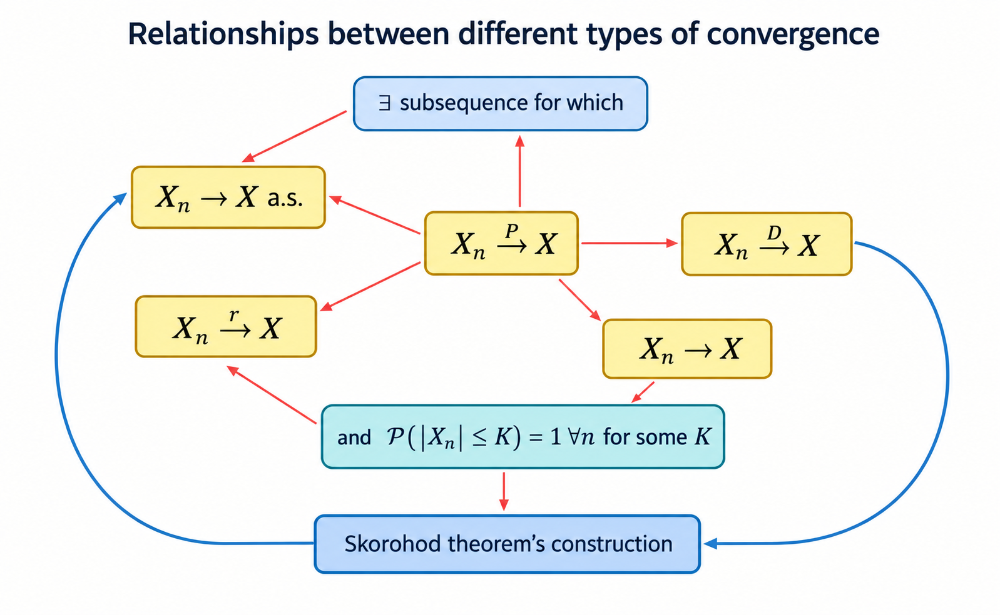

1 Convergence of Stochastic Processes
Recall from our study of Real Analysis that a sequence of functions \(\{f_{n}\}\) is said to converge to \(f\) on \([0,1]\) in the following different ways
- Pointwise. \(\forall x \in[0,1]\), \(f_{n}(x)\to f(x)\).
- Almost everywhere. \(\exists K\in \mathcal{B}_{[0,1]}\) such that \(\mu(K)=1\) and \(\forall x \in K\), \(f_{n}(x)\to f(x)\).
- Uniform. \(\forall \epsilon>0\), \(\exists N\in \mathbb{N}\) such that \(\forall n>N\), \(\sup_{x\in[0,1]}|f_{n}(x)-f(x)|<\epsilon\).
Consider a discrete time stochastic process \(\{X_{n}, n\geq 1\}\) and \(X\) on some probability space \((\Omega,\mathcal{F}, \mathbb{P})\). The following are ways in which \(\{X_n\}\) can converge to \(X\) as \(n \to \infty\):
The stochastic process \(\{X_n\}\) is said to converge almost surely to \(X\), denoted \(X_n\stackrel{a.s.}{\rightarrow}X\) \((n\rightarrow\infty)\) if
\[ \mathbb{P}\left(\lim_{n\rightarrow\infty}X_n=X\right)=\mathbb{P}\left(\left\{\omega\in\Omega:\lim_{n\rightarrow\infty}X_n(\omega)=X(\omega)\right\}\right)=1. \]
Recall that a norm is any function \(\Vert \cdot\Vert\) from a vector (function) space \(V\) to \(\mathbb{R}\) satisfying:
- \(\Vert f\Vert \geq 0\) for every \(f\in V\)
- \(\Vert f\Vert=0\) if \(f\) is a zero function
- \(\Vert af\Vert = |a|\Vert f\Vert\) for every \(a \in \mathbb{R}\), \(f \in V\)
- \(\Vert f+g \Vert \leq\Vert f\Vert +\Vert g\Vert\) (triangle inequality)
The \(L^p\) norm is a specific norm intimately linked with probability spaces and expectations defined as
\[ \Vert X\Vert_{p}=[\mathbb{E}|X|^p]^{1/p}=\left(\int _{\Omega}|X|^p \, d\mathbb{P}\right)^{1/p} . \]
A stochastic process \(\{X_n\}\) is said to converge in \(L^p\)-norm to \(X\), denoted \(X_n\stackrel{L^p}{\rightarrow}X\) \((n\rightarrow\infty)\) if
\[ \lim_{ n \to \infty }\Vert X_{n}-X\Vert_{p}=\lim_{ n \to \infty }(\mathbb{E}|X_{n}-X|^p)^{1/p} = 0. \]
A stochastic process \(\{X_n\}\) is said to converge in probability to \(X\), denoted \(X_n\stackrel{\mathbb{P}}{\rightarrow}X\) \((n\rightarrow\infty)\) if
\[ \lim_{ n \to \infty } \mathbb{P}(\{\omega \in\Omega:|X_{n}(\omega) -X(\omega)|>\epsilon\})=0, \]
for every \(\epsilon>0\).
A stochastic process \(\{X_n\}\) is said to converge in law (or converge in distribution) to \(X\) as \(n\to \infty\), denoted \(X_{n}\stackrel{\mathcal{D}}{\to}X\) if
\[ \lim_{ n \to \infty } F_{X_{n}}(x)=F_{X}(x). \]
We note the following key points and observations about convergence in law:
Unlike other types of convergence convergence in law tells us nothing about the behavior of the random variables themselves, only their distribution.
Convergence in law means that \(F_{n}(x) \to F(x)\) for all \(x\) up to the points of discontinuity of \(F\).
Limits in distribution are unique, that is \(F_{n}(x) \to F(x)\) and \(F_{n}(x) \to G(x)\) then \(F=G\).
Consider the sample space \(\Omega=[0,1]\) with uniform probability measure defined by
\[ \mathbb{P}([a,b])=b-a;\quad (0 \leq a \leq b \leq 1). \]
Define the sequence of random variables \(\{ X_{n} \}_{n \in \mathbb{N}}\) and random variable \(X\) by
\[ X_{n}(\omega) = \begin{cases} 1 & \text{if } 0 \leq \omega < \frac{{n+1}}{2n} \\ 0 & \text{otherwise}, \end{cases}\quad\&\quad X(\omega)= \begin{cases} 1 & \text{if }0 < \omega< \frac{1}{2} \\ 0&\text{otherwise}. \end{cases} \]
We can show that \(X_{n} \stackrel{a.s.}{\to}X\) by first defining the set \(A\) as
\[ A:= \{ \omega \in \Omega :\lim_{n \to \infty}X_{n}(\omega)=X(\omega) \}, \]
and showing that \(\mathbb{P}(A)=1\). We can specifically find \(A\) by noting:
- For \(0\leq \omega < \frac{1}{2}< \frac{{n+1}}{2n}\) we have that \(X_{n}(\omega)= X(\omega)=1\) and so \(\left[ 0, \frac{1}{2} \right) \subset A\);
- For \(\omega> \frac{1}{2} \implies 2\omega-1>0\) we have \(X(\omega)=0\) and \(X_{n}(\omega)=0\) for all \(n > \frac{1}{2\omega-1}\) so \(\left( \frac{1}{2},1 \right] \subset A\).
Since \(\mathbb{P}\left( X_{n}=\frac{1}{2} \right)=0\) we have that \(\mathbb{P}\left( X_{n} \in\left[ 0, \frac{1}{2} \right) \cup \left( \frac{1}{2}\cup 1 \right] \right)=1\) and since \(\left[ 0, \frac{1}{2} \right) \cup \left( \frac{1}{2}\cup 1 \right] \subset A\) we have \(\mathbb{P}(A)=1\).
2 Convergence Relationships
These types of convergence are of difference strengths (in that some imply others but not vice versa) as outlined in the diagram below.

2.1 Convergence in Mean to Convergence in Probability
If \(X_{n}\stackrel{L^1}{\to}X\) then \(X_{n}\stackrel{\mathbb{P}}{\to}X\) as \(n \to \infty\).
Proof. This result follows directly from applying Markov Inequality since, for every \(\epsilon>0\) we have that
\[ \mathbb{P}(|X_{n}-X|>\epsilon)\leq \frac{1}{\epsilon}\cdot \mathbb{E}|X_{n}-X|, \]
as required.
Note: The converse does not hold in general.
2.2 Convergence in Mean Hierarchy
Consider \(1<r<s<\infty\) and assume that \(X_{n}\stackrel{L^s}{\to}X\) as \(n \to \infty\). Then we have that \(X_{n}\stackrel{L^r}{\to}X\). In other words, higher orders of r-th mean convergence imply lower orders.
Proof. This result follows directly from applying Lyapunov Inequality
\[ (\mathbb{E}|X|^r)^{1/r}\leq(\mathbb{E}|X|^s)^{1/s};\quad 0<r<s<\infty, \]
as required.
Note: The converse does not hold in general.
2.3 Convergence in Probability to Convergence in Law
If \(X_{n}\stackrel{{\mathbb{P}}}{\to}X\) as \(n \to \infty\), then \(X_{n}\stackrel{\mathcal{D}}{\to}X\) as \(n\to \infty\).
Proof. For every \(x \in\mathbb{R}\), \(\epsilon>0\) we have that
\[ \mathbb{P}(X\leq x-\epsilon)\leq \liminf_{n \to \infty } \mathbb{P}(X_{n}\leq x)\leq \limsup_{ n \to \infty } \mathbb{P}(X_{n}\leq x)\leq \mathbb{P}(X\leq x+\epsilon). \]
If \(x\) is a continuity point of \(X\), then as \(\epsilon\downarrow 0\), the left and right sides converge and hence
\[ \lim_{ n \to \infty } \mathbb{P}(X_{n}\leq x)=P(X\leq x), \]
giving the result.
Note: The converse does not hold in general.
2.4 Convergence in Probability to Convergence in Mean under Boundedness
Suppose there exists \(K>0\) such that \(\mathbb{P}(|X_{n}|\leq K)=1\) for every \(n\) and \(X_{n}\stackrel{\mathbb{P}}{\to}X\) as \(n \to \infty\). Then \(X_{n}\stackrel{L^1}{\to}X\) as \(n \to \infty\).
Proof.
2.5 Convergence Almost Surely to Convergence in Probability
If \(X_{n}\stackrel{a.s}{\to}X\) as \(n \to \infty\) then \(X_{n}\stackrel{\mathbb{P}}{\to}X\) as \(n \to \infty\).
Proof. We fix \(\varepsilon>0\) and define the event \(A_{n}=\{ |X_{n}-X| \geq \epsilon \}\). We can then define the decreasing set \(B_{m}=\bigcup_{k=m}^\infty A_{k}\) i.e. \(B_{m}\supseteq B_{m+1}\supseteq\dots\) and since decreasing sequences have limits we have that \[ B_{m}=\bigcup_{k=m}^\infty A_{k}\downarrow B_{\infty}=\bigcap_{m=0}^\infty \bigcup_{k=m}^\infty A_{k}=\limsup_{n\to \infty}A_{n}. \] We consider the limit \[ \lim_{n \to \infty}\mathbb{P}(|X_{n}-X|>\varepsilon)=\lim_{n \to \infty}\mathbb{P}(A_{n})\leq \lim_{{n \to \infty}}\mathbb{P}(B_{n})\stackrel{m.c.t}{=}\mathbb{P}\left(\lim_{n\to \infty}B_{n}\right)\leq \mathbb{P}(X_{n}\not\to X)=0. \]
Note this result follows from an application of the Monotone Convergence Theorem.
Note: The converse is not true in general, however we can show that for every sequence of random variables that converges in probability, there exists a subsequence that converges almost surely.
2.6 Convergence in Probability to Convergence Almost Surely of a Subsequence
If \(X_{n}\stackrel{\mathbb{P}}{\to}X\), then there exists a non-random subsequence \(\{ n_{1}, n_{2}, \dots, n_{k}, \dots \}\nearrow \infty\) such that \(X_{n_{k}}\stackrel{a.s.}{\to}X\) as \(k \to \infty\).
Proof. Assuming \(X_{n}\stackrel{\mathbb{P}}{\to}X\) we fix integer \(k>0\) and choose \(\varepsilon = \frac{1}{k}\) such that by definition \[ \lim_{n \to \infty}\mathbb{P}\left( \left\{ \omega \in \Omega:|X_{n}(\omega)-X(\omega)|> \frac{1}{k} \right\} \right) =0. \] Thus, there exists \(n_{k}\) such that \(\mathbb{P}\left( \left\{ \omega \in \Omega:|X_{n_{k}}(\omega)-X(\omega)|> \frac{1}{k} \right\} \right)=\mathbb{P}(A_{k})\leq \frac{1}{k}^2\). From results for Geometric Series we have that \[ \sum_{i=1}^\infty\mathbb{P}(A_{k})=\sum_{i=1}^\infty \frac{1}{k^2}<\infty, \] and so from the Borel-Cantelli Lemma we have that \(\mathbb{P}(A_{k}~i.o)=0\) and so there exists \(n_{0}\) such that \(A_{k}^c=\left\{ \omega \in \Omega:\lvert X_{n_{k}}(\omega)-X(\omega) \rvert \leq \frac{1}{k} \right\}\) happens for all \(k \geq n_{0}\) with probability 1.
2.7 Convergence in Probability to Convergence in Mean under Uniform Integrability
For \(p>0\) assume that \(X_n \in L^p\), \(n \geq 1\) and \(X_{n}\stackrel{\mathbb{P}}{\to} X\). The following three statements are equivalent:
- \(\{ |X_{n}|^p,~n\geq 1 \}\) is uniformly integrable;
- \(X_{n}\stackrel{L^p}{\to}X\) and \(X\in L^p\); and
- \(\lim_{n \to \infty}\mathbb{E}[|X_{n}|^p]=\mathbb{E}[|X|^p]<\infty\).
Proof.
3 Skorohod’s Representation Theorem
Suppose that \(X_{n}\stackrel{\mathcal{D}}{\to}X\) as \(n \to \infty\) with \(F_{n}(x):=\mathbb{P}(X_{n} \leq x)\) and \(F(x):=\mathbb{P}(X\leq x)\) for \(x \in \mathbb{R}\). Then, there exists a probability space \((\Omega', \mathcal{F}',\mathbb{P}')\) and random variables \(\{Y_{n}, n\geq 1\}\) and \(Y\) such that \[ Y_{n}\stackrel{\mathcal{D}}{=}X_{n},\quad Y\stackrel{\mathcal{D}}{=X}, \] for every \(n\) and \(Y_{n}\stackrel{a.s.}{\to}Y\) as \(n \to \infty\).
Proof.
4 Convergence Almost Surely Results
In most problems, proving convergence almost surely directly is challenging, thus it is desirable to know some sufficient conditions.
For sequence of random variables \(\{ X_{n} \}n \in \mathbb{N}\), if for all \(\epsilon >0\) we have
\[ \sum_{n=1}^\infty \mathbb{P}(|X_{n}-X|>\varepsilon)<\infty, \]
then \(X_{n}\stackrel{a.s.}{\to}X\).
This result is a direct application of the Borel-Cantelli Lemma since the condition implies that \(\{ |X_{n} - X|>\varepsilon \}\) finitely often almost surely and so eventually \(|X_{n}-X|<\varepsilon\) for all \(n\) large enough almost surely.
5 Convergence of Distribution Results
With convergence of distribution we consider the following questions:
- Does a sequence of d.f.s \(\{ F_{n} \}\) necessarily converge?
- In general no, Helly's Selection Theorem provides a partial answer.
- If a sequence of d.f.s \(\{ F_{n} \}\) converges to a function \(F\): \(F_{n}(x) \to F(x)\) is the limit \(F\) necessarily a distribution function?
- In general, no, the space of distribution functions is not compact.
- In general, no, the space of distribution functions is not compact.
- When is the limit \(F\) (of a sequence of d.f.s \(\{ F_{n} \}\)) is a proper d.f.?
- When \(\{ F_{n} \}\) is tight.
Some key results relating to convergence of distribution functions are detailed below.